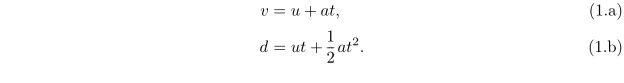
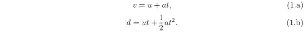
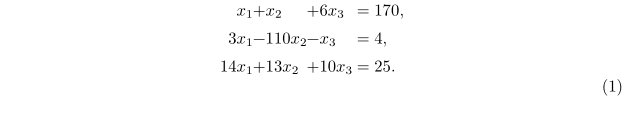
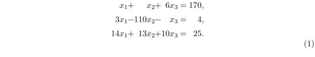

Contents
Summary
The instances of \startmathalignment ... \stopmathalignment are used for math alignments.
Instances
| \startalign ... \stopalign | |
| \startmathalignment ... \stopmathalignment |
Settings instance
| \startMATHALIGNMENT[...=...,...] ... \stopMATHALIGNMENT | |
| ...=...,... | inherits from \setupmathalignment |
Description
amsmath
package. It is used inside formulas. The usage is straightforward:
\startformula \startmathalignment[...=...] \NC ... \NC ... \NR \stopmathalignment \stopformula
As in tabular materials \NC is used as column separator and \NR as row separator. Whether the formula is numbered can be controlled by prefixing \placeformula to \startformula. This will place a single number vertically centred with respect to the equation. When all the subformulas should be numbered individually, one specifies number=auto.
There is a predefined shorthand for \startmathalignment which is \startalign to match the amsmath name. However, \startmathalignment should be preferred, as \startalign already has a different meaning outside math mode.
Examples
Example 1
To imitate certain LaTeX contructs (some might not yet work on the Wiki). More examples can be found in A. Mahajan, Display Math in ConTeXt, MAPS 34, 22–34 (2006).
-
align
-
\placeformula \startformula \startmathalignment[number=auto] \NC v \NC= u + at, \NR \NC d \NC= ut + \frac{1}{2} at^2. \NR \stopmathalignment \stopformula
- 
-
gather
-
\placeformula \startformula \startmathalignment[n=1,number=auto] \NC v = u + at, \NR \NC d = ut + \frac{1}{2} at^2. \NR \stopmathalignment \stopformula
- 
-
alignat
-
\placeformula \startformula \startmathalignment [n=7,align={right,left,right,left,right,left,right}] \NC x_1 \NC + \NC x_2 \NC + \NC 6x_3 \NC = \NC 170, \NR \NC 3x_1 \NC - \NC 110x_2 \NC - \NC x_3 \NC = \NC 4, \NR \NC 14x_1 \NC + \NC 13x_2 \NC + \NC 10x_3 \NC = \NC 25. \NR \stopmathalignment \stopformula
- 
Note: In ConTeXt LMTX 2024.10.31, the above example should be modified as follows to reproduce the same behaviour:
-
\placeformula \startformula \startmathalignment [n=7,align={1:right,2:left,3:right,4:left,5:right,6:left,7:right}] \NC x_1 \NC + \NC x_2 \NC + \NC 6x_3 \NC = \NC 170, \NR \NC 3x_1 \NC - \NC 110x_2 \NC - \NC x_3 \NC = \NC 4, \NR \NC 14x_1 \NC + \NC 13x_2 \NC + \NC 10x_3 \NC = \NC 25. \NR \stopmathalignment \stopformula
- 